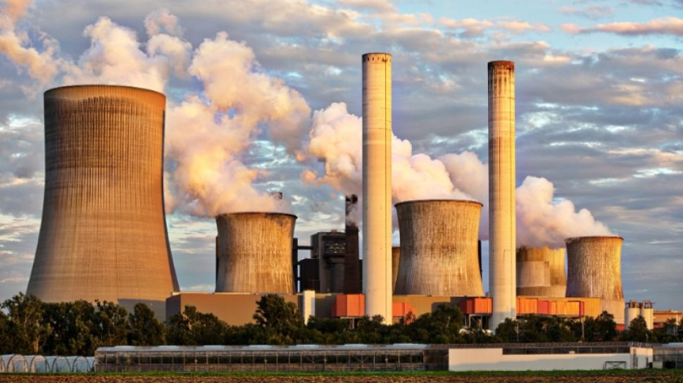

Revolusi Industri 1.0 merupakan sebuah revolusi di bidang industri yang pertama kali terjadi tepatnya pada abad ke-18 pada periode tahun 1750 hingga tahun 1850. Revolusi ini ditandai dengan adanya penemuan mesin uap yang digunakan dalam proses produksi sebuah barang.

Pada era ini juga terjadi perubahan besar pada cara manusia dalam mengelola sumber daya yang ada serta memproduksi sebuah produk khususnya pada beberapa bidang sebagai berikut, pertanian, manufaktur, transportasi, pertambangan, dan juga teknologi di seluruh dunia.
Revolusi industri 1.0 ini pertama kali muncul di Britania Raya, yang pada akhirnya tersebar ke seluruh negara yang ada di daerah Eropa Barat, Amerika Utara, Jepang dan pada akhirnya ke berbagai negara yang ada di seluruh dunia.
Sebelum adanya revolusi ini, proses sebuah produksi maupun jasa merupakan suatu hal yang sulit karena memakan waktu yang lama dan membutuhkan biaya besar karena semuanya dilakukan secara manual
Dengan adanya revolusi tersebut, segala proses produksi yang ada menjadi lebih efisien, mudah, dan juga murah. Tepatnya di Inggris, dimana mesin uap tersebut digunakan sebagai keperluan alat tenun mekanis pertama yang dapat meningkatkan hasil serta produktivitas industri di sektor tekstil.
Pada awalnya, peralatan kerja memiliki ketergantungan terhadap tenaga kerja manusia atau SDM dan juga makhluk hidup lain seperti hewan, yang kemudian dapat digantikan dengan mesin uap tersebut. Selain digunakan sebagai keperluan alat tenun, mesin uap yang ada juga digunakan dan diimplementasikan ke dalam sektor transportasi.
Pada era tersebut, transportasi internasional yang digunakan adalah transportasi laut yang masih menggunakan serta mengandalkan tenaga angin yang tidak selalu bisa diandalkan karena dapat bertiup dari arah yang berlawanan atau bahkan tidak ada angin saat dibutuhkan sama sekali.
Dengan adanya penemuan James Watt tersebut, penggunaan tenaga angin pada alat transportasi pun semakin berkurang dikarenakan penggunaan mesin uap yang diperkirakan lebih murah dan efisien. Dengan adanya mesin uap tersebut, sebuah kapal dapat berlayar 24 jam penuh dengan adanya kayu serta batu bara yang cukup.
Revolusi industri tersebut memungkinkan bangsa Eropa untuk dapat mengirim kapal perangnya ke seluruh penjuru dunia dengan jangka waktu yang lebih singkat dan efisien. Berbagai negara imperialis yang ada di Eropa memulai perjalanannya dengan menjajah berbagai kerajaan yang ada di Afrika serta Asia.
Namun, selain adanya penjajahan tersebut revolusi industri yang terjadi memiliki dampak lain terhadap lingkungan, yaitu pencemaran lingkungan akibat asap yang dikeluarkan mesin uap dikarenakan melakukan proses pembakaran kayu serta batu bara yang menyebabkan polusi udara serta munculnya limbah pabrik akibat penggunaan mesin uap tersebut dalam proses produksi.
Berdasarkan sumber yang ada, revolusi industri 1.0 yang terjadi di zamannya berhasil dalam mendongkrak perekonomian yang ada, dimana selama lebih dari dua abad setelah terjadinya revolusi ini, terjadinya peningkatan rata-rata sebesar enam kali lipat pendapatan perkapita di berbagai negara yang ada di seluruh dunia. Pahami lebih dalam pada buku Dasar-Dasar Memahami Revolusi Industri.